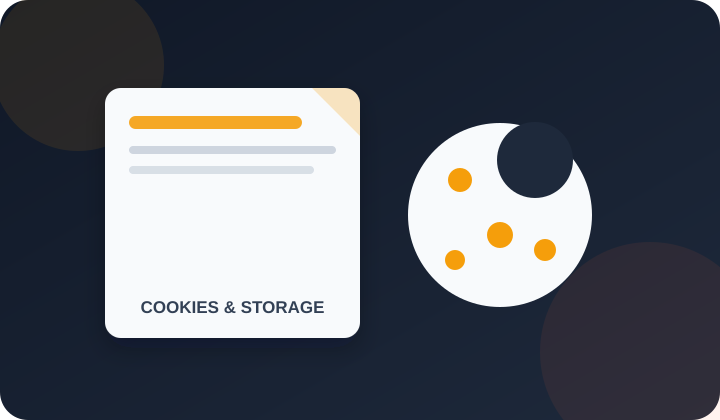

Cookies & Local Storage Policy

PDFdukan uses your browser’s local storage to remember settings, and Google Analytics cookies only after you tap “Got it” on the cookie notice. PDFdukan does not use advertising cookies and does not store your files in cookies or local storage.
1. What are cookies and local storage?
Cookies and local storage are small pieces of data a website saves in your browser. Cookies can travel with each request to a server; local storage stays in your browser and is read only by the site’s own scripts.
2. Which local storage does PDFdukan use?
PDFdukan uses the local storage keys below. They stay until you clear site data or, for account keys, until you sign out.
| Key | What it stores | Type |
|---|---|---|
cm_cookie_consent | Remembers that you accepted the cookie notice | Essential |
cm_theme, cm_theme_mode | Your light or dark theme | Preference |
cm_lang | Your chosen site language | Preference |
pd-favs-v1 | Tools you starred as favorites | Preference |
pd-rated-v1 | The star rating you gave each tool | Preference |
cm_recent | Names of recently processed files (no file content) | Functional |
cm_settings | Scanner settings such as export format and quality | Functional |
Tool settings (e.g. pd-watermark-v1, pd-textx-v1, ocrLang) | Your last options in a tool | Preference |
cm_read_notifs | Notifications you have already read | Functional |
cm_user, cm_profile_photo | Your signed-in name, email and photo | Account |
cm_gdrive_token, cm_gdrive_token_expiry, pdfdukan_drive_folder_id | Short-lived Google Drive access and your Drive folder | Account |
The home page can also use sessionStorage (cm_pending_files) to hand a file you picked to a tool; it is cleared when the tool reads it or when you close the tab.
3. Why does PDFdukan use local storage instead of cookies?
Local storage keeps settings on your device without sending them to a server with every page request. That suits a site whose tools already work offline-style in the browser, and it means your preferences never reach our servers.
4. Are my documents saved in cookies or local storage?
No. Files you open in a tool stay in the tab’s memory and are gone when you close or reload the page. Only file names, never contents, appear in the recent-files list, and you can clear that list by deleting site data.
5. Which cookies does PDFdukan set?
PDFdukan itself sets no tracking cookies. After you accept the notice, Google Analytics 4 sets its own cookies (such as _ga) to count visits and tool use, with IP anonymization on. If you do not tap “Got it”, the Analytics script is not loaded.
Does signing in set cookies?
Google Sign-In opens Google’s own window, which uses Google’s cookies under Google’s policy. On pdfdukan.com, PDFdukan keeps only the account keys listed in the table, and signing out removes them.
6. Does PDFdukan use advertising cookies?
No. PDFdukan runs no ads today, so no advertising cookies are set. If ads are added later, this page and the cookie notice will be updated first.
7. How can I control or delete them?
You can delete PDFdukan’s cookies and local storage in your browser at any time:
- Chrome / Edge: Settings → Privacy → Cookies and site data → See all site data → pdfdukan.com
- Firefox: Settings → Privacy & Security → Cookies and Site Data → Manage Data
- Safari: Settings → Privacy → Manage Website Data
Deleting this data resets your theme, language and favorites. You can also block Analytics with the Google Analytics Opt-out Add-on.
8. How do I ask a question?
Ask about this policy through our contact page. See the Privacy Policy for how data is handled.
© 2026 PDFdukan. · Privacy Policy · Terms of Service · Disclaimer